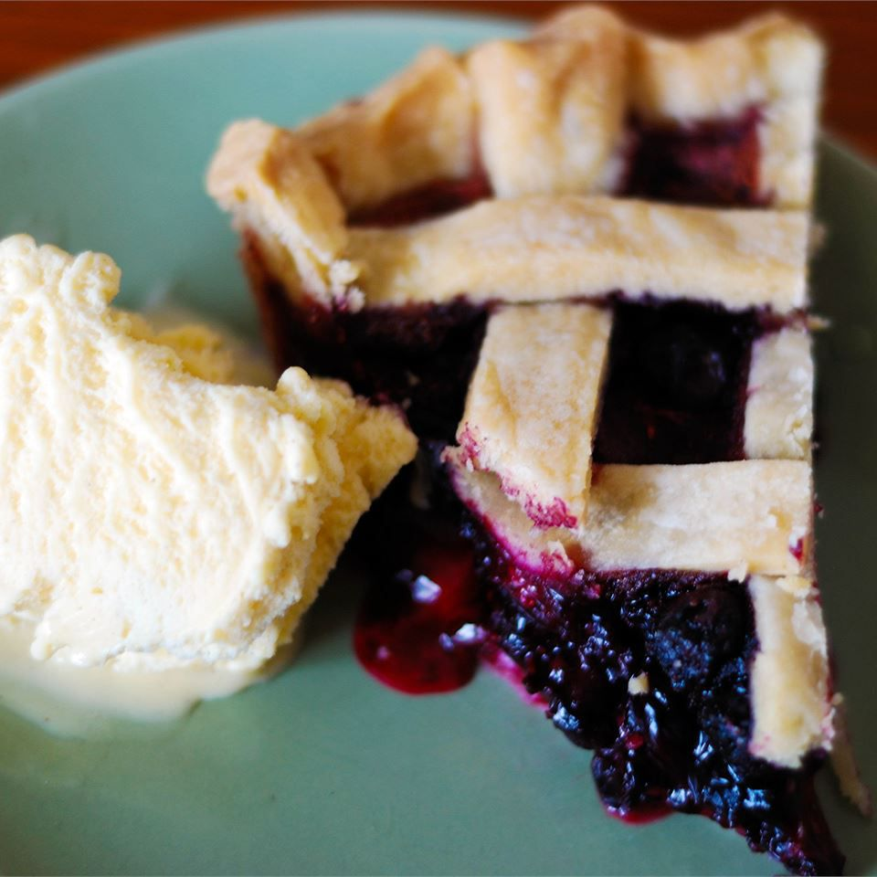

Blueberry Pie

Description
This Blueberry Pie, made with fresh berries, is sure to gather attention at the next family function. With a beautiful lattice top and delicious filling, everyone will be racing to get in line for a piece. Follow along to these simple instructions to make your very own homemade Blueberry Pie.
Ingredients
- 1/4 teaspoon salt
- 4 cups fresh blueberries
- 1 (14.1 ounce) package double-crust pie pastry, thawed
- 1 tablespoon butter
- 1/2 teaspoon ground cinnamon
- 3 tablespoons cornstarch
- 3/4 cup white sugar
Steps
- Set an oven rack to the lowest position and preheat the oven to 375 degrees F (190 degrees C).
- Mix sugar, cornstarch, cinnamon, and salt together in a bowl; sprinkle over blueberries.
- Line a pie dish with one pie crust. Pour berry mixture into the crust and dot with butter. Cut remaining pastry into 1/2 to 3/4-inch-wide strips. Use the strips to weave a lattice top. Crimp and flute the edges.
- Bake pie on the lowest oven rack until filling is bubbling and crust is golden brown, about 50 minutes.